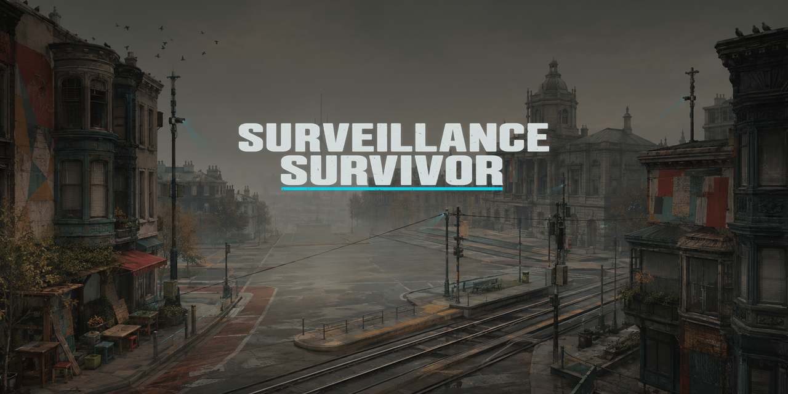

Satirical survivor roguelite
Surveillance Survivor
Stay untrackable. Break the grid.
Active pre-alpha · simulator-ready · not release-ready

What it is
A satirical survivor roguelite about staying untrackable in a surveilled world.
Pre-alpha: playable in simulator, not a public release yet.
In short
Tone is paranoid slapstick, not horror realism. The game is being rebuilt as a single polished San Francisco level: manage Exposure, survive escalating enforcement, defeat the Algorithmic Moderate, and reach Extraction, with three run-local upgrades. It runs on iPhone (iOS 18+, landscape) with a deterministic 60 Hz Swift core that owns game truth; SpriteKit projects state; SwiftUI supplies the shell.
Physical-device acceptance and App Store owner fields remain open—do not describe the project as release-ready.
Built with
- Swiftlanguage for the game rules and the app
- SpriteKitdraws the city, characters and effects
- SwiftUItitle screen, settings and results screens
- iOS on iPhoneiOS 18 or later, played in landscape
- Core Hapticsvibration feedback for hits and warnings
- VoiceOverreads results, tutorial and captions aloud
- GitHub Spec Kitmethod for writing the specifications before code
Changelog
Milestones in plain English, newest first, to Nov 7, 2026
- The final boss now finds its way around buildings instead of getting caught on corners.
- A LETHAL THREAT warning now flags incoming attacks that would end your run.
- One enemy's mines are now drawn as a clear ring that is easier to spot.
- Stealth pass finished with a Captain Court climax, medals and a reward for a quiet approach.
- Fixed touch controls in release builds and repaired combat feedback so hits read clearly.
- New Court rehearsal lets players practise the final boss fight directly.
- VoiceOver now reads results, tutorial and captions, and results fit larger text sizes.
- The iPhone app ran for the first time, with original art, music, a title screen and settings.
- Game-feel pass added hit-stop, screen shake and clearer impact effects.
- Enemies can start unaware and be struck first, and chosen Cameras now call in reinforcements.
- Runs retargeted to five to eight minutes, plus a Daily Run with a shared seed, ghost and run card.
- Reboot began: the game was narrowed to one polished San Francisco level, specified before coding.
- New game core built with Exposure, destructible Cameras, three upgrades, the boss fight and Extraction.
- First prototype on iPhone: an on-screen thumbstick, a steady game clock and a SpriteKit scene.
Roadmap
What comes next. Plans, not promises, and no dates.
- In progressTesting on a real iPhone and recorded playtests are still needed before the level is called finished.
- In progressFinishing the player character's art and animation comes first, then the enemy art.
- PlannedMore cities would only be considered after this first level passes its quality gates.